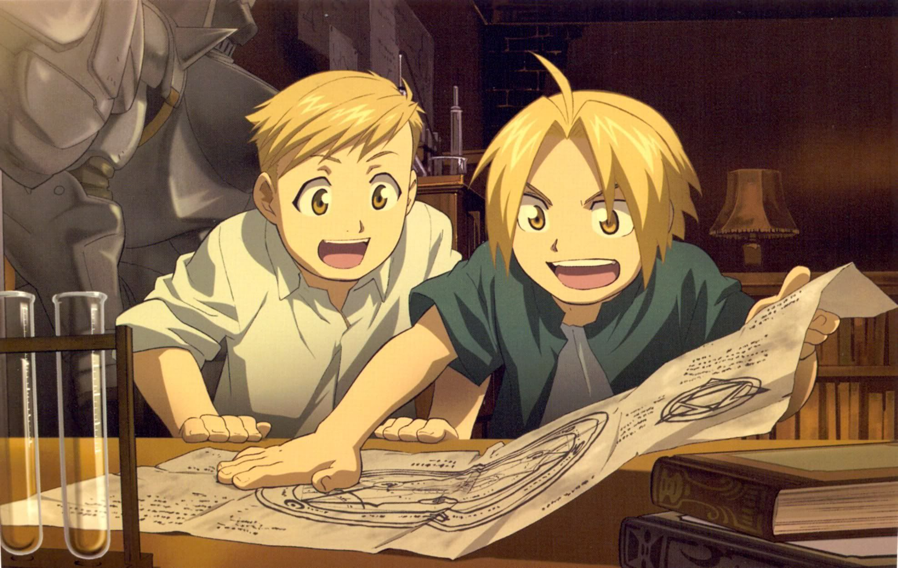
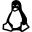

About Me
I'm Marcus, a software engineer and passionate about playing games in general. I started to learn programming at university when i was 17 years old.
I'm a enthusiastic about Neuroscience and i really like to read books/articles about this theme.
My hobbies are around the computer, I play some RPG, MMORPG and FPS games. Currently I play CSGO, Priston, New World, The Witcher, Fortnite and Chess, not at the same time, but varying between these games.
And finally i really like to watch animes!! My favorite anime is Full Metal Alquemist, i've watched it at least six times.
Fun fact! Was my niece of 3 years old than choose this background color.

Projects
Skills
